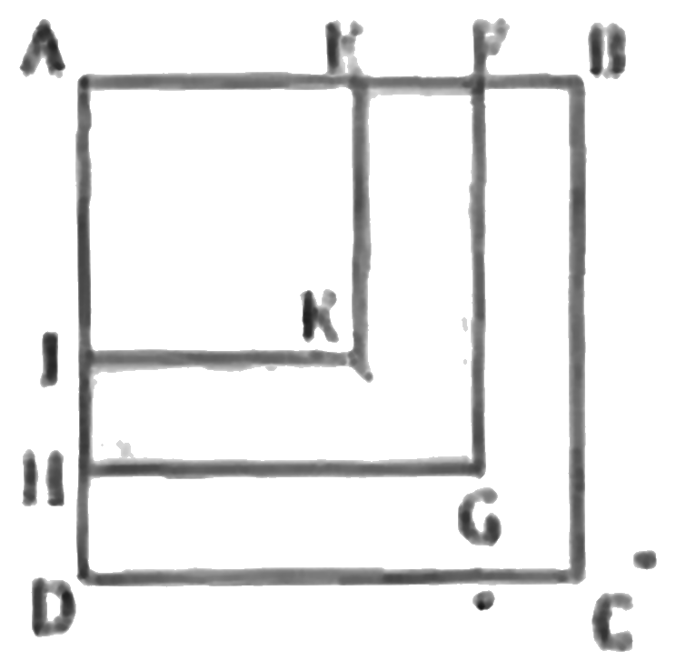
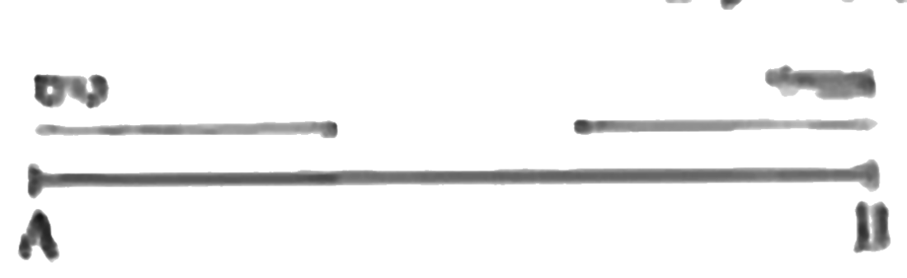
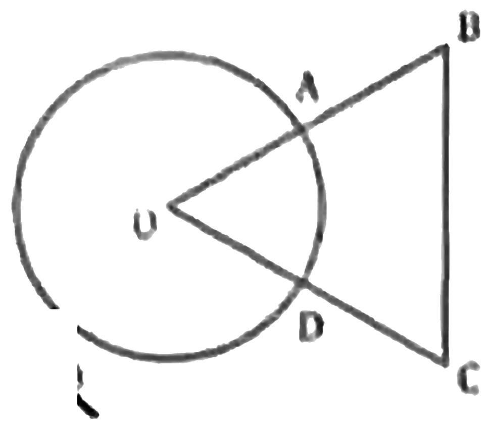
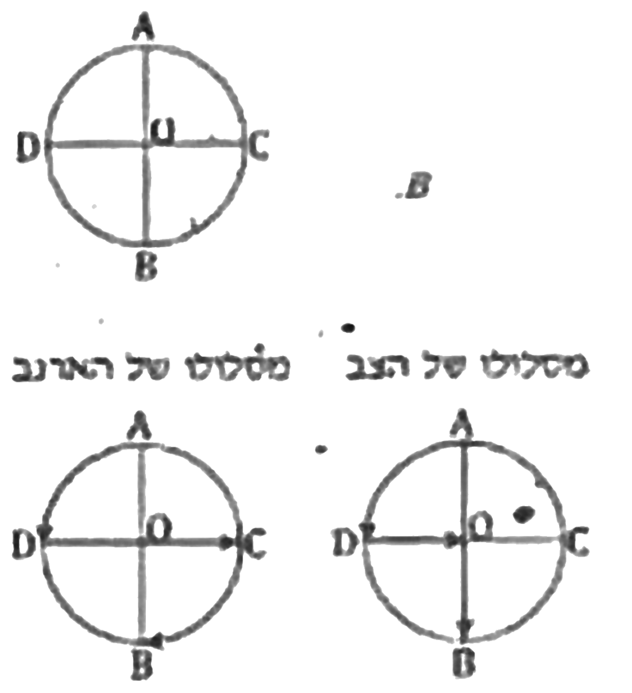

נתונים שני מעוינים. מעוין קטן שצלעו n ס"מ ומעוין גדול שצלעו 3n ס"מ.
מה יהיה היחס בין שטח המעוין הקטן לבין שטח המעוין הגדול?
בעת משמרת במסעדה הטיפים שמקבל מלצר נעים בין 10 ל־90 שקלים וברמן מקבל בין 120 ל־250 שקלים. מתוך כל הטיפים, חלקו היחסי של הברמן הוא לכל הפחות –
⚠ השברים בתשובות (2)–(3) קטנים – נקראו בקירוב.
xⁿ − xn5x4n5 − 1 = ?
⚠ המעריכים קטנים מאוד בסרטון – נקראו בקירוב; יש לבדוק בספר (עמוד 79).

בסרטוט שלפניכם שלושה ריבועים – ABCD, AFGH ו־AEKI. נתון: EF = ⅓AE , FB = ½EF.
על פי נתונים אלו והנתונים שבסרטוט, השטח הלבןהשטח המנוקד = ?
⚠ השברים בנתון ובתשובות קטנים – נקראו בקירוב (ונבדקו מול חישוב שמתאים לתשובה 1).
x(y + z)(y² + z²)(y⁴ + z⁴) = y⁸ − z⁸
x = ?
אמילי ותום יצאו זה לקראת זה בשעה 8:00, תום מנקודה A ואמילי מנקודה B, על מסלול ישר המחבר בין שתי הנקודות. בשעה 9:00, שעה לפני שנפגשו, היה המרחק ביניהם 150 ק"מ.
מה המרחק בין נקודה A לנקודה B (בק"מ)?

a, b ו־c הם מספרים שלמים. a · b + c מתחלק ב־4 ללא שארית.
איזו מהטענות הבאות בהכרח אינה נכונה?

בסרטוט שלפניכם מעגל שמרכזו O ורדיוסו 6. A ו־D נקודות על היקף המעגל. OBC הוא משולש שווה צלעות. נתון: השטח הכהה שווה לשטח הצורה שקודקודיה הם D, C, B ו־A.
על פי נתונים אלו ונתוני הסרטוט, BC = ?
⚠ התשובות קטנות – נקראו בקירוב.
לכל מספר x הוגדרו הפעולות #, @ ו־$ כך:
#(x) = @(2x) + 42
@(x) = 2$(x) + 5x − 10
$(x) = ⁴√x⁸ + 1⚠
#(1) = ?

בסרטוט שלפניכם מעגל שמרכזו O ורדיוסו 8 ס"מ, בו הועברו שני קטרים (AB ו־CD) המאונכים זה לזה. ארנב וצב יצאו מנקודה A, באותו הזמן, לריצה עד לנקודה B. מהירותו של הארנב היא 4 מטר לשנייה ומהירותו של הצב היא 2 מטר לשנייה. בשני הסרטוטים שלפניכם מוצגים מסלולי הריצה של הארנב והצב.
מה מהבאים נכון בהכרח?
⚠ פרטי המסלולים בסרטוט קטנים – תוארו בקירוב.